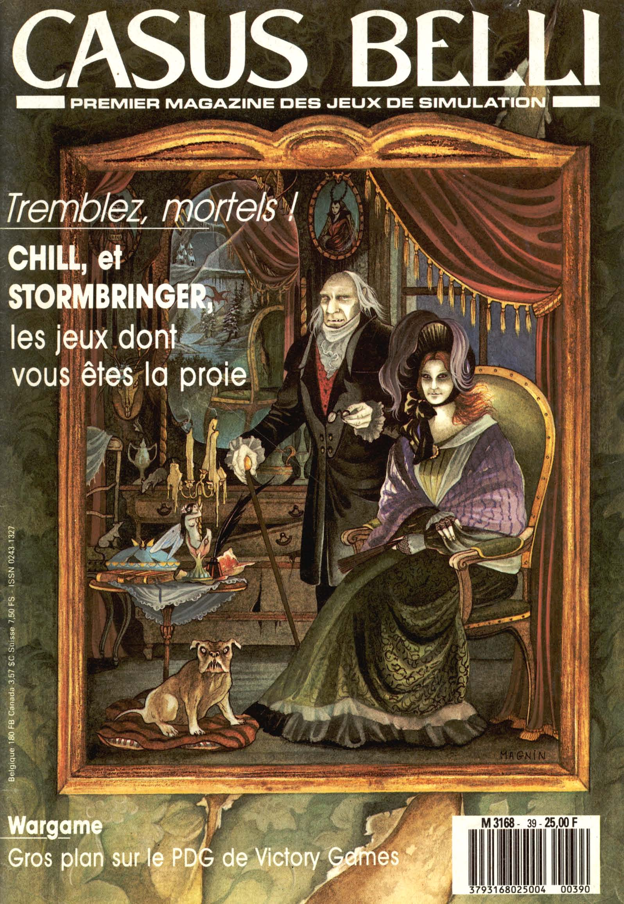

Démarrage de ma rétrospective pour sychroniser du Casus Old School avec le numéro sorti par BBE. Afin de m’échauffer, je vous fais donc une revue du numéro 39, été 1987, un été qui ne sera ni particulièrement chaud, ni pourri, après la très grosse vague de froid de début d’année.

Une petite plongée donc dans cette année 1987 pour remettre dans le contexte : j’ai personnellement 11 ans à cette date, j’ai fait ma première partie de jeu de rôle cette même année sur l’Oeil Noir mais je suis à 10 000 lieues de deviner qu’il existe tout cet univers du jeu de rôle, porté par Casus Belli.
Tandis que la République teste la première cohabitation avec Chirac / Mitterrand, on fête aussi cette année le millénaire de Hugues Capet, prélude aux festivités du bi-centenaire de la Révolution qui verra la fin de sa dynastie. La République sait être schizophrène ! Ce déchet de Klaus Barbie est jugé mais impossible de prendre pour moi la dimension de ce procès, à part que Barbie pour un nom de SS, ça fait personnage d’INS… La TV est en ébullition : privatisations de TF1, Antenne 2 qui diffuse la Sourire du Dragon (le Dessin Animé inspiré de Gygax et D&D) et lancement de M6 ! Sur le plan international, c’est la guerre Iran-Irak et les otages au Liban qui occupent les grands titres, et le Mur de Berlin est bien là et semble inamovible. A la radio et sur nos cassettes on écoute… beaucoup de bonnes (et très mauvaises) choses - j’ai préféré mettre la liste ici : https://fr.wikipedia.org/wiki/1987_en_musique
Sur le plan du jeu de rôle, est-on dans l’âge d’or évoqué dans notre CB 39 BBE ? si l’édito se fait l’écho du bouillonnement de sorties, on est sur un numéro d’été donc le calendrier des sorties est plutôt sage. On retrouve en revanche pas mal de publicités dans les pages, ce qui démontre d’un vrai dynamisme de l’activité, mais on se lamente aussi en parallèle de la traduction en VF encore incomplète, malgré toutes ces années, du triptyque d’AD&D… Bref, ce n’est pas forcément l’abondance si on s’arrête à cette photo !
Comment se porte sinon le patriarcat toujours pour faire écho au CB 39 BBE ? Eh bien, on trouvera des photos de joueuses dans ce numéro (p. 08), mais il s’agit du débrief d’un GN. En revanche, quand on attaque la partie des petites annonces, il est vrai que les seuls prénoms féminins qui se dégagent sont ceux… des noms de rue. J’aurai l’occasion de revenir sur ces sujets avec les autres Casus de cette époque.
Or donc, reprenons depuis le début. Ce Casus 39 débute par une couverture de Florence Magnin : il ne s’agit pas de sa première commande mais c’est sa première couverture ! @Tristan évoque dans sa biographie du GROG sa première citation dans Casus et il s’agit de ce numéro (p. 14) comme lecteur après avoir répondu à un concours et livré une Lovecrafterie (déjà !).
Au menu, les classiques Nouvelles du Front sont donc assez courtes en raison des vacances d’été qui, en ce temps, mettait beaucoup plus le pays à l’arrêt que maintenant. Malgré la Gen Con à venir, pas de grosses nouveautés sur les VO : la 2ème édition de Paranoïa est prévue chez WEG, et TSR démarre ses Gazeteers pour Mystara avec Kamareikos, tandis que le Manual of the Planes est annoncé. Les surprises arriveront donc plus tard. C’est un peu plus fourni sur la partie VF : du Légendes chez Descartes, Oriflam est un éditeur tout récent qui se fait un nom grâce à la sortie de Stormbringer, et Dragon Radieux sort Aventures en Trégor. Enfin, Transecom en charge de la VF de (A)D&D gère un planning avec des sorties chaotiques (un peu comme Wizards France en ce moment  , il y a manifestement une sorte de malédiction sur plusieurs générations). C’est reflété dans les critiques (Têtes d’Affiches) de ce numéro où on parle de la sortie en VF (enfin !) du DMG mais le Manuel des Monstres reste manquant à l’appel (et mettra encore quelques mois à sortir). On entraperçoit aussi un OVNI (pourtant volant et identifié) avec un mini-wargame Top Gun sorti par FASA (eh oui, on est contemporain du premier film !). Et sinon du matos Paranoïa, Cthulhu (2 suppléments / scénarios) et Légendes, et une double page élogieuse sur la VF de la 1ère édition de Stormbringer !
, il y a manifestement une sorte de malédiction sur plusieurs générations). C’est reflété dans les critiques (Têtes d’Affiches) de ce numéro où on parle de la sortie en VF (enfin !) du DMG mais le Manuel des Monstres reste manquant à l’appel (et mettra encore quelques mois à sortir). On entraperçoit aussi un OVNI (pourtant volant et identifié) avec un mini-wargame Top Gun sorti par FASA (eh oui, on est contemporain du premier film !). Et sinon du matos Paranoïa, Cthulhu (2 suppléments / scénarios) et Légendes, et une double page élogieuse sur la VF de la 1ère édition de Stormbringer !
Casus c’était aussi les différentes inspis BD, Romans et SF, mais encore à cette époque Ciné par Wolverine. Il est question dans ce numéro des projections du 16ème festival de films fantastiques de Paris avec la mise en avant de Freddy III et d’Evil Dead : qui se souvient ? Il y a même un Anime, bien avant Akira ! Dans les BD, pas beaucoup qui remontent à la mémoire : Les Chemins de Malefosse (tome 4) ou Neige. Sur la partie SF du regretté Roland Wagner, l’auteur Lucius Shepard est mis en avant mais sans faire apparemment la carrière que Roland lui prophétise. Alors qu’à côté il chronique aussi les dernières sorties d’Asimov et de Kim Stanley Robinson.
On passe sur les aides de jeu et les conseils. Le Bâtisses & Artifices (eh oui déjà en 1987) est consacré au village médiéval : ce n’est pas aussi original qu’une Arcologie sur Dune, mais les plans sont magnifiques et l’approche historique rigoureuse faisait partie de mon plaisir de lecture de Casus. On a le droit ensuite à un extrait de l’Encyclopédie pour Empire Galactique à paraître avec des dessins de Manchu dedans. Quant à la partie Conseils, c’est un Profession Scénariste très plan plan qui est proposé avec une illustration moche mais bien fun : on ne gardera donc que celle-ci plutôt que les banalités énoncées. Franck Stora se livre à un billet sur comment hacker des règles mais on reste loin de l’exercice de style de notre époque. Donc bof !
Trois scénarios qui ne sont pas encore regroupés dans un livret en encart : Stormbringer, issu d’un tournoi et retravaillé, mais mis à part une certaine dimension épique, il reste d’un dirigisme digne d’un scénario de tournoi. Bref, oubliable ! Chill par Denis Gerfaud où il est question de Maison Hantée : sans surprise mais sans bavure, un bon petit scénar qui mérite la relecture ! Et enfin AD&D par Denis Beck qu’on retrouve dans le Recueil ré-édité par BBE dans la gamme Laelith : dans le scénario d’origine, il n’est pas fait mention de Laelith, ce qui montre que le scénario a été artificiellement repris par BBE, mais c’est sans conséquence puisque le scénario n’est absolument pas urbain : il contient une grosse surprise, manifestement pour régler les comptes des gros bills qui était une préoccupation un peu récurrente de l’époque.
J’expédie rapidement la fin de ce numéro avec la rubrique Ludotique chroniquant des jeux antédiluviens et dont aucun nom ne m’a parlé (Déjà Vu, Gato et Under Fire), et même un jeu sur une service minitel (Car Crash) : on avait déjà le streaming ! Le magazine se termine avec la partie Wargames encore conséquente à cette époque de Casus Belli : un jeu en encart Hochkirch 1758 (la carte est mochissime), un guide / conseils d’Ave Tenebrae – le wargame de FeuMeuFeu, un scénario Les Aigles et quelques critiques de parutions.
J’attends donc la sortie prochaine du Casus 40 de BBE pour continuer cette rubrique spatio-temporelle parallèle !